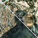
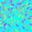
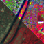
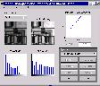
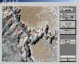
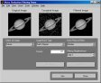
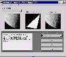

Image Processing Toolbox Demos
Enhancement

Contrast Enhancement Techniques

Correcting Nonuniform Illumination

Enhancing Multispectral Color Composite Images

Intensity Adjustment and Histogram Equalization

Landsat Color Composite

Noise Reduction Filtering

Region-of-Interest Processing